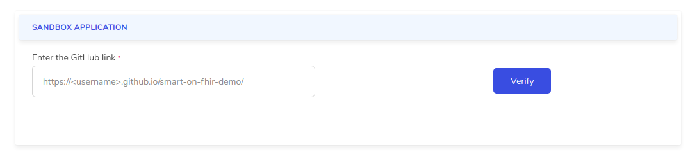
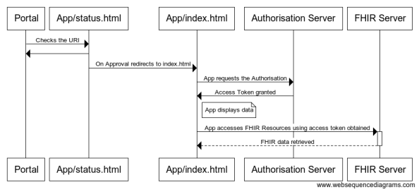
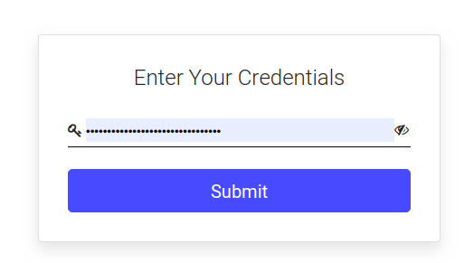

Smart on FHIR
Introduction
This documentation will help you create a Sandbox Application using Github pages and Innovaccer Developer Portal to explore FHIR resources.
Prerequisites
- A Github account
Github Pages
For the purposes of this tutorial we will be hosting our SMART on FHIR app through Github Pages. Github Pages is a convenient way to host static or client rendered web sites. Setting up Github pages is easy, so easy in fact that it’s already done for you.
- It can also be done by the master branch appraoch, first of all, you need to clone the repository, got to settings and then enable the Github Pages there.
- Since you forked the tutorial, the gh-pages branch has already been created, however Github won’t publish your site until you make a change to the gh-pages branch, so let’s make a change.
- Modify the
index.htmlpage to include your Github user-name in the title, and commit directly to gh-pages branch. - Use Github UI to directly edit
index.html. Simply switch the branch to gh-pages, navigate to/smart-on-fhir-demo/app/index.htmland click the pencil icon. - Commit your changes to deploy.
- Once the app has been redeployed go to
https://<gh-username>.github.io/smart-on-fhir-demo/app/index.htmlto ensure your app is available
Project Structure
The overall structure of repo
├── app
│ ├── index.html
│ └── static
│ ├── css
│ │ ├── json-viewer.css
│ │ └── mainPage.css
│ ├── images
│ │ └── innovaccer_logo.svg
│ └── js
│ ├── data.js
│ ├── json-viewer.js
│ ├── pagination.js
│ ├── querySelect.js
│ ├── renderJSON.js
│ └── script.js
├── core
│ ├── base.html
│ ├── entrypoint.html
│ ├── static
│ │ ├── css
│ │ │ ├── base.css
│ │ │ ├── bootstrap.min.css
│ │ │ └── font-awesome.min.css
│ │ ├── images
│ │ │ ├── default_favicon.ico
│ │ │ └── flowchart.png
│ │ └── js
│ │ ├── bootstrap.min.js
│ │ ├── fhir.js
│ │ ├── jquery-3.2.1.slim.min.js
│ │ ├── jquery.min.js
│ │ ├── oauth.js
│ │ ├── popper.min.js
│ │ ├── storage.js
│ │ └── utils.js
│ └── status.html
├── README.md
For the reusability and scalability of the Application, its divided into 2 packages
- Core
- App
Core
The Core package contains the libraries that connect to the portal. These can be added to other applications as it is.The user can use these libraries to build desired custom applications.
The key features of these libraries are
- Connect to the portal
- Authorize the users using OAuth2.0
- Perform the FHIR Search operation
App
The App package contains the libraries used to build the application. The key features of these libraries are
- The UI of the application
- Display results in tabular format
- Perform custom query feature
- Pagination feature
Project Setup
- The user needs to fork this repository and deploy it to Github pages. Guide to deploying a repository to Github pages can be found here
https://help.github.com/en/github/working-with-github-pages. - After getting the link for the deployed repository, the user needs to enter it in the developer portal and click verify.
- It is then checked whether the link is valid or not, by hitting the
status.htmlpage in the repo.

The complete flow used is shown in the image below:

App Launch
- After the verification of the link by the portal, a launch button appears which on clicking launches the application

- After verification of the url in the
entrypoint.htmlwhich contains the client id, api_url and the ouath_url, these are stored in the local/session storage and redirects tobase.html. - The user needs to enter the client_secret in the
base.htmlwhich is again stored in local/session storage.

Note; Client secret is sensitive information and for the sample sandbox app we store them in Local storage. We recommend using alternative methods in production application and safeguarding the client_secret from XSS attacks.
- This then redirects to
index.htmlwhich is the home page of our app. - On the indexl, access token is obtained using oauth lib for
Access Token Retrieval
The access token is generated using the oauth lib.
Ouath Lib
Our authentication follows OAuth 2.0 protocol to authorize the user. It uses the Client Credentials grant workflow.
- To perform the authorization, the client_id, client_secret and oauth url which were stored in the previous steps are retrieved from the storage using the storageDriver.
- The accessToken is first searched in the storage, if present, it is checked whether the token is still valid or timed out. In case of a timed out token, a fresh one is requested.
- In case, token is not found in the storage, a fresh token is generated. Everytime a new token is generated, it is stored in the storage as well with expiry.
The library returns the result in the following format:
{
status: "Success",
message: "Token created successfully.",
token: "kCspwCQjDpVO2O0p6CjS86BEa9blWxU8",
expires_in: 2304000,
onSetTime: 1589380443128
}
When the previous store token got expires the Oauth library returns the result in the following format:
{
message: "Previous Token timed-out. Generated new token.",
status: "Miss",
token: "JpqtxGZJxiCsuIdmI5plbpM6y52QKWFP"
}
When the previous store token is still valid then Oauth library returns the same token in the following format:
{
message: "Previous Token is still valid.",
status: "Hit",
token: "7FMYrFZ2AFh1ck76SyFAD0F7GyPMHt3j"
}
When the input client Id or client secret is invalid then Oauth library returns the message in the following format:
{
code: 400,
message: "Invalid Credentials",
status: "Failure"
}
Access FHIR Resources
The resources are accessed using FHIR Library .
- With the access token and the fhir url , we hit the FHIR search API to fetch data.
- The function takes the query parameters and the resource name as arguments . It constructs an appropriate search URL and makes the request along with proper authentication and content-type headers.
Some important elements required for the fhirSearch are:
- Access Token: This would be retrieved from the oauth lib.
- fhirUrl: This is retrieved from the Local storage.
- Error handling is also performed.
The function returns data in the following format
{
entry: [{…}],
link: [{…}],
message: "Successfully Executed",
resourceType: "Bundle",
status: 200,
totalCount: 1000,
type: "searchset"
}
Following error message will come when there is a mistake in search param value like fhirSearch(resource,{"active":"tru"},1,5)
{
message: "Boolean must be True or False",
status: 400
}
Following error message will come when there is a mistake in input client secret :
{
message: "Invalid Credentials",
status: "Failure"
}
The status key depicts the status of the search request.